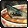
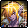
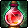
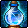
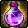
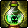

materials


results




procedure
note: red-blue-red and red-blue-purple (and blue-red-red, blue-red-purple) were coded manually, take the solution carefully as i might have typo'd :o(
images from DFOg, http://www.dfoneople.com/ . <insert some disclaimer about ths page being merely a fanpage here>